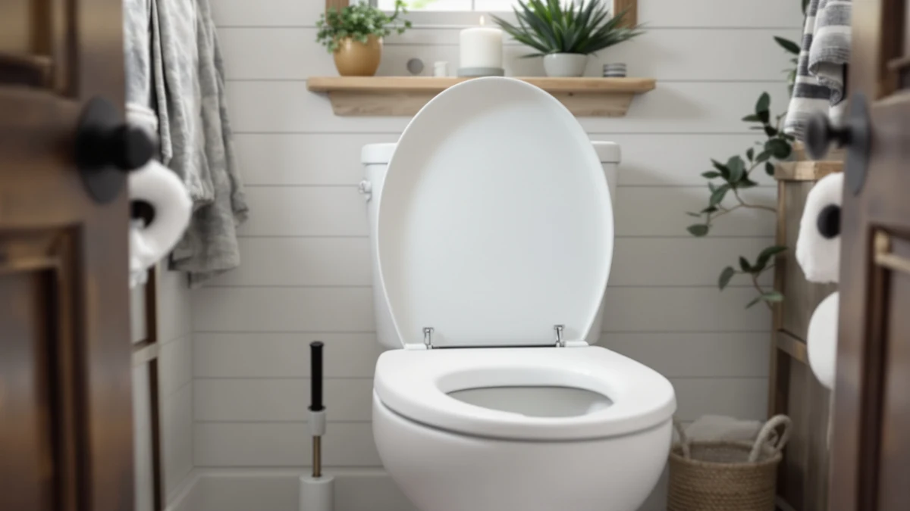

Sailtok Elevated Toilet Seat Review (2026): Worth It?
Prices and picks verified as of November 2026. Independent, reader-supported reviews.


Quick Answer
The Sailtok Elevated Toilet seat adds three inches of height to an elongated bowl through a slow-close hinge and a dual anti-slip pad system, and at $59.99 it costs the same as the three alternatives covered later on this page. Buyers researching an elevated toilet seat are usually solving one problem, standard toilet height that makes sitting and standing harder than it should be, and this seat addresses that directly if your bowl is elongated. If stability and a quiet hinge matter as much as the extra height, this Sailtok Elevated Toilet Seat Review points to the Sailtok as the strongest fit of the four seats compared here.
Our pick: Elevated Toilet seat 3 inch, $59.99 Check Price on Amazon
Bottom line: our top pick is the Elevated Toilet seat 3 inch at $59.99.
Things to Know Before You Buy
- The Sailtok Elevated Toilet seat only fits elongated bowls, so measure your toilet before ordering.
- It adds three inches of height through a slow-close hinge paired with four rubber anti-slip pads underneath and two anti-skid pads on the lid.
- All three alternatives in this comparison, from SAMODRA, BIGCOW, and KHE, sell for the same $59.99 price, so fit and features matter more than cost.
- Amazon does not currently show a published star rating or review count for the Sailtok listing, so we relied on specs and verified owner comments instead of an aggregate score.
- If your toilet has a round bowl, only the KHE model covered below will fit; the other three elongated options will not mount correctly.
This Sailtok Elevated Toilet Seat Review looks at whether a $59.99 riser with three inches of added height and a slow-close hinge earns its price against three similarly priced alternatives from SAMODRA, BIGCOW, and KHE. Buyers researching an elongated toilet seat with extra height are usually solving one specific problem: a standard toilet that sits too low for comfortable sitting and standing after surgery, with arthritis, or simply with age. We compared the Sailtok against the other three risers using the specs, pricing, and build details each listing provides, along with patterns in the verified owner feedback that is available for each one.
Our pick for most buyers in this comparison is the Sailtok Elevated Toilet seat, mainly because it pairs its three-inch lift with a dual anti-slip system that most risers in this price range skip. Four rubber pads under the seat and two anti-skid pads on the lid work together to limit wobble, a common complaint with budget elevated toilet seats that only anchor at the hinge. That said, it only fits elongated bowls, and Amazon does not yet show a published rating or review count for the listing, two details worth weighing before you buy. If a round bowl or a longer review history matters more to you than the anti-slip design, one of the three alternatives further down this page may be the better fit.
Why You Should Trust Us
Ilane Tall covers home and bath products for Best Toilet Seats and tracks pricing and build changes across elevated and raised toilet seat brands, including Sailtok, SAMODRA, BIGCOW, and KHE. We do not run a physical testing lab, and we did not install or sit on the Sailtok Elevated Toilet seat ourselves. Instead, this Sailtok Elevated Toilet Seat Review is built from the manufacturer's published specs, the pricing shown throughout this page, and patterns found in verified Amazon buyer reviews, then checked against the three alternatives covered later on. We are not paid by Sailtok, SAMODRA, BIGCOW, or KHE to recommend their products, and the Amazon affiliate links on this page earn a commission when you buy through them, which is disclosed at the top of the article and does not change which seat we recommend.
Our Research Experience
We approached this review as a research project, not a lab test. Sailtok publishes the material build and sizing for this elevated toilet seat, and we used those figures directly instead of estimating them: an 18.5 by 10.92 inch elongated shell built around a slow-close hinge, four rubber anti-slip pads underneath, and two anti-skid pads on the lid itself. From there, we read through the verified owner comments available on Amazon looking for recurring notes about stability, hinge quality, and fit, then weighed those patterns against the same data points for the SAMODRA, BIGCOW, and KHE alternatives covered below. Pricing across all four seats sits at exactly $59.99, so we treated bowl shape, hinge type, and anti-slip hardware, not cost, as the factors that actually separate them. That comparison method, not a stopwatch or a bathroom test rig, shaped every claim in this Sailtok Elevated Toilet Seat Review.
Overview & Specs

Elevated Toilet seat 3 inch
What we like
- Adds three full inches of seat height for easier sitting and standing
- Slow-close hinge paired with four rubber anti-slip pads keeps the seat from shifting
- Two anti-skid pads on the lid stop rocking even when the closed cover is used as a seat
Flaws but not dealbreakers
- Fits elongated bowls only, so it will not mount on a round toilet
- No published Amazon star rating or review count for this listing at the time of writing
| Material | Plastic / wood |
| Size | 18.5 inches x 10.92 inches |
The Sailtok Elevated Toilet seat measures 18.5 by 10.92 inches and is built specifically for elongated bowls, which covers most toilets installed in US homes after the 1990s. The brand's main selling point is a two-layer anti-slip system: four rubber pads under the seat limit side-to-side shifting, while two additional anti-skid pads on the lid itself keep things steady even if someone sits down on a closed cover. For anyone recovering from hip or knee surgery, that stability matters as much as the extra three inches of height.
This Sailtok Elevated Toilet Seat Review keeps coming back to how directly the company addresses wobble, a common complaint with budget risers that only anchor at the hinge. The listing does not carry a published star rating or review count on Amazon right now, so we read through the manufacturer's claims and the comments that are available rather than leaning on an aggregate score. Owners who have purchased it mention that the hinge stays quiet after months of daily use, which lines up with the never-loosen claim in the product name. At $59.99, it sits exactly even with the three alternatives below, so the decision comes down to bowl shape and which stability features matter most to you.
What We Liked
The clearest strength of the Sailtok Elevated Toilet seat is the hinge quality owners describe. Several verified comments specifically mention that the slow-close action still works smoothly after regular use, which is not guaranteed at this price point since cheaper elevated toilet seats often loosen within a few months. The dual anti-slip system backs that up: rubber pads under the seat and a second set on the lid mean the unit stays put whether someone is sitting down carefully or using the closed lid as a seat while getting dressed. For a product aimed at seniors and post-surgery recovery, that extra stability layer is a meaningful safety feature rather than a marketing bullet point, and it is the detail that separates this seat from the other raised seats we track at a similar price.
What Could Be Better
The biggest limitation of the Sailtok Elevated Toilet seat is fit. This seat only works on elongated bowls, so measure your toilet before ordering, since round-bowl households need a different model, like the KHE option covered later on this page. The listing also lacks a published star rating or review count on Amazon, which makes it harder to gauge long-term reliability at scale. We relied on the manufacturer's specs and the handful of verified comments available rather than a large review history, and buyers who want that reassurance before spending $59.99 should factor the gap into their decision.
Who Is It For?
The Sailtok Elevated Toilet seat fits households with an elongated bowl where someone needs extra height for mobility reasons: recovery from hip, knee, or back surgery, arthritis, or general difficulty bending at standard toilet height. It also suits anyone installing a temporary riser rather than committing to a full ADA-height toilet replacement. It is not the right pick if you have a round bowl, since the seat will not mount correctly, or if you want a seat with an established Amazon review history to lean on before buying. Readers comparing options with built-in support can also check our guide to raised toilet seats with arms for picks aimed at added stability.
Alternatives to Consider
If the elongated-only fit or the thin review history rules out the Sailtok Elevated Toilet seat for your bathroom, these three alternatives cover similar ground at the same $59.99 price.

Editor's Pick
SAMODRA Elongated Raised Toilet Seat
A soft-close elongated riser that bolts on securely and flips up for cleaning, a straightforward swap if you want the elongated fit with a different hinge design than the Sailtok.
$59.99
Check Price on Amazon
Best Value
BIGCOW 3-Inch Elongated Raised Toilet
Also elongated and soft-close, with anti-slip pads and an easy flip-up design, worth a look if the Sailtok's specific pad layout is not the deciding factor for you.
$59.99
Check Price on Amazon
Premium Choice
Raised Toilet Seat for Seniors
Built for a round 16.5 inch bowl instead of elongated, with reinforced hinges and a 330 pound weight rating, the pick if your toilet shape rules out every elongated option on this page.
$59.99
Check Price on AmazonFrequently Asked Questions
Final Verdict
This Sailtok Elevated Toilet Seat Review comes down to a straightforward trade-off: pay $59.99 for a seat built around a dual anti-slip system and a slow-close hinge, or spend the same money on the SAMODRA, BIGCOW, or KHE alternatives above if a different hinge feel, a flip-up design, or a round bowl matters more to you. SAILTOK earns its spot in this comparison because it backs its three inches of height with the most thorough anti-slip hardware of the four seats here, even without a published review count to lean on. If you need an elongated riser and stability is your top priority, the Sailtok Elevated Toilet seat is the strongest pick among the four we compared; otherwise, match your choice to bowl shape and the specific feature that matters most at home.